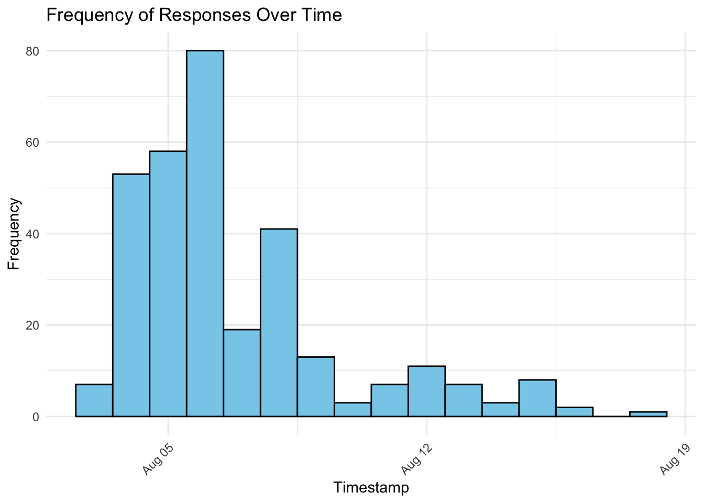
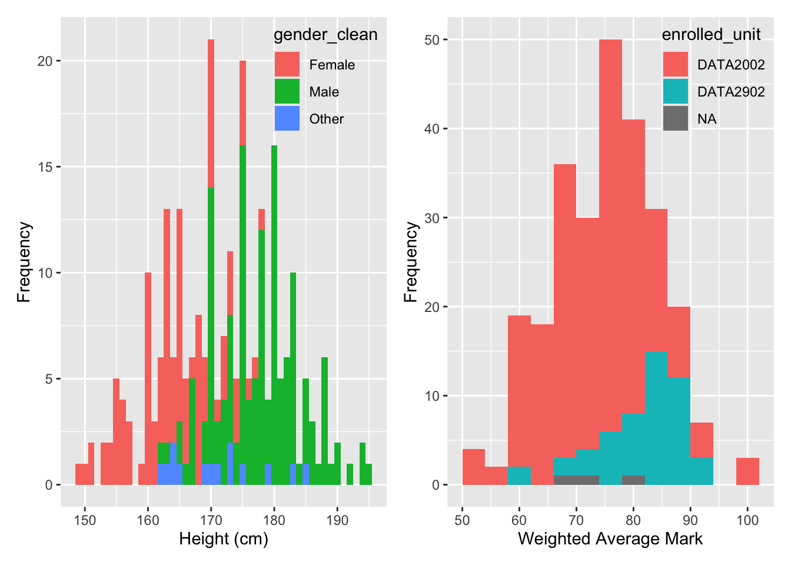
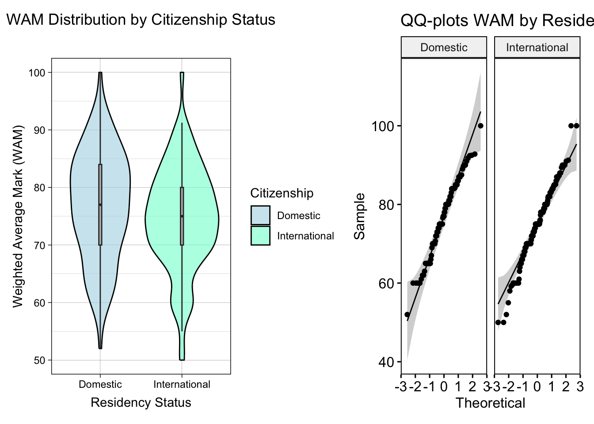

── Attaching core tidyverse packages ──────────────────────── tidyverse 2.0.0 ──
✔ dplyr 1.1.4 ✔ readr 2.1.5
✔ forcats 1.0.0 ✔ stringr 1.5.1
✔ ggplot2 3.5.1 ✔ tibble 3.2.1
✔ lubridate 1.9.3 ✔ tidyr 1.3.1
✔ purrr 1.0.2
── Conflicts ────────────────────────────────────────── tidyverse_conflicts() ──
✖ dplyr::filter() masks stats::filter()
✖ dplyr::lag() masks stats::lag()
ℹ Use the conflicted package (<http://conflicted.r-lib.org/>) to force all conflicts to become errors
library(janitor)
Attaching package: 'janitor'
The following objects are masked from 'package:stats':
chisq.test, fisher.test
library(hms)
Attaching package: 'hms'
The following object is masked from 'package:lubridate':
hms
library(patchwork)library(ggpubr)
x = readxl::read_excel("data/DATA2x02_survey_2024_Responses.xlsx")old_names =colnames(x)new_names =c("timestamp","target_grade","assignment_preference","trimester_or_semester","age","tendency_yes_or_no","pay_rent","urinal_choice","stall_choice","weetbix_count","weekly_food_spend","living_arrangements","weekly_alcohol","believe_in_aliens","height","commute","daily_anxiety_frequency","weekly_study_hours","work_status","social_media","gender","average_daily_sleep","usual_bedtime","sleep_schedule","sibling_count","allergy_count","diet_style","random_number","favourite_number","favourite_letter","drivers_license","relationship_status","daily_short_video_time","computer_os","steak_preference","dominant_hand","enrolled_unit","weekly_exercise_hours","weekly_paid_work_hours","assignments_on_time","used_r_before","team_role_type","university_year","favourite_anime","fluent_languages","readable_languages","country_of_birth","wam","shoe_size")# overwrite the old names with the new names:colnames(x) = new_names# combine old and new into a data frame:name_combo =bind_cols(New = new_names, Old = old_names)
2.1 Data Quality & Data Set Discussion
Is this a random sample of DATA2X02 students?
Of the 759 students of data2x02 there were only 313 responses and hence a 41% response rate. As a majority of students did not respond there is significant room for the data set to not be a representative sample of DATA2X02 Students, or a “non-random dataset”. However, without conclusive descriptive statistics it is impossible to conclude. In section “what are potential biases?” we will demonstrate with a chi-squared test that this sample is not an independent sampling and implying that there is a selection bias within the data.
One way to visualize the self selection bias is through a time series of responses over time as shown below.
daily_counts <- x |>group_by(timestamp) |>summarise(count =n())lambda =mean(daily_counts$count)time_series_plot <- x |>ggplot(aes(x = timestamp)) +geom_histogram(binwidth =86400, color ="black", fill ="skyblue") +labs(x ="Timestamp", y ="Frequency", title ="Frequency of Responses Over Time") +theme_minimal() +theme(axis.text.x =element_text(angle =45, hjust =1) )time_series_plot

Which follows a poisson distribution modeled by \[
X \sim \text Poisson(\lambda)
\]
What are the potential biases
Within this data set there are multiple biases, but primarily on account of the types of questions asked a response bias is present, and on account of the types of students that are inclined to respond to surveys, a selection bias is present. To determine weather a selection bias exists an additional chi-squared test for homogeneity among populations of data2902 and data2002. Under the null hypothesis the proportions of students in data2902 who responded, and data2002 who responded would be the same. This is an appropriate null hypothesis to test for independence of the two groups, as later through the report we will be analyzing traits of HD students of the sample of survey respondents.
Here the assumption of expected cell counts above 5 is made for the chi-squared approximation to be appropriate; a criteria that is met. Calculating the p-value with an p >= 0.05 threshold for significance gives a p value of \(2.45 \cdot 10^{-8}\); hence implying that there is a clear selection bias in the respondents of the survey. Further, this too provides a more definitive answer to “Is this a random data set of students?” — no, as there is a strong selection bias where data2902 students nominated themselves more frequently.
As for response bias, there are a few poorly asked questions that lead to response bias. Take for instance average hours slept. For many respondents this is a guess, often rounded to the nearest hour. Or for instance height, which in general populations approximates a normal curve.
#as height is being used to demonstrate a point of bucketing / rounding phenomena, it is appropriate to remove inches.x = x |> dplyr::mutate(height_clean = readr::parse_number(height),height_clean =case_when( height_clean >=1000~NA_real_, height_clean <=10~NA_real_, #removing all inches height_clean <=2.5~ height_clean*100,TRUE~ height_clean ),wam_clean =case_when( wam >=95& target_grade =="HIGH_DISTINCTION"~NA_real_, wam <=30~NA_real_, #impossible to pass prerequisites with this wamTRUE~ wam),gender_clean =case_when(substr(gender, 1, 1) =="M"~"Male",substr(gender, 1, 1) =="m"~"Male",substr(gender, 1, 1) =="F"~"Female",substr(gender, 1, 1) =="f"~"Female",TRUE~"Other") )
Warning: There was 1 warning in `dplyr::mutate()`.
ℹ In argument: `height_clean = readr::parse_number(height)`.
Caused by warning:
! 1 parsing failure.
row col expected actual
204 -- a number Pretty tall
Warning: A numeric `legend.position` argument in `theme()` was deprecated in ggplot2
3.5.0.
ℹ Please use the `legend.position.inside` argument of `theme()` instead.
p2 = x |>ggplot()+aes(x = wam_clean,fill = enrolled_unit ) +geom_histogram(binwidth =4) +labs(x ="Weighted Average Mark", y ="Frequency") +theme(legend.position =c(1, 1),legend.justification =c(1, 1),legend.background =element_blank(),legend.box.background =element_blank() )p1 + p2 +plot_layout(ncol =2)
Warning: Removed 60 rows containing non-finite outside the scale range
(`stat_bin()`).
Warning: Removed 52 rows containing non-finite outside the scale range
(`stat_bin()`).

Although it could be argued that the sample in this case does represent normality somewhat accurately, there are “bin artefacts”, or accumulations at the points, 160, 170, 175 and 180. This is one example of response bias where people round heights to the nearest discrete measurement. Similarly, in the plots for High Distinction grades similar rounding is apparent. This plot visually conforms with an assumption of normality, however due to response bias responses tend to congregate around round grade thresholds such as distinction average (75) and credit average (65). Togeather this forms clear proof of response bias
2.3
A
2.2 Specific Hypothesis Tests
Is a linkage model between target grades and ‘high’, ‘low’ and ‘medium’ hours studied per week consistent with observed data at the p < 0.05 significance level?
x = x |>mutate(weekly_study_hours =as.character(weekly_study_hours),hours_numeric = readr::parse_number(weekly_study_hours),hours_numeric =case_when( hours_numeric >100~NA_real_,TRUE~ hours_numeric ),hours_buckets =case_when( hours_numeric <10~"Low", hours_numeric >40~"High",TRUE~"Medium" ),grade =case_when( wam_clean <75~"CR + P", # fail students not contained in dataset wam_clean <85~"D",TRUE~"HD" ))table_full =table(x$hours_buckets, x$grade)chisq.test(matrix(table_full, 3, 3))
HD students Expectation of grades, do HD students expect significantly different results than non high performing students. Proportions of expectations ought to remain consistent through
Is weighted average mark significantly different between International and Domestic students at the p < 0.05 level?
Although there is nothing explicitly about citizenship, it can be infered from country of birth and weekly paid hours worked.
Although the survey did not explicitly ask respondents citizenship, data on residency status can be inferred from the country of birth and weekly hours worked.
QQ Plot, Histogram, DATA
x = x |>mutate(Citizenship =case_when(substr(country_of_birth, 1, 2) =="au"|substr(country_of_birth, 1, 2) =="AU"|substr(country_of_birth, 1, 2) =="Au"~"Domestic",#add case where proof of work implies citizenship. weekly_paid_work_hours >=26~"Domestic",TRUE~"International" ))p1 = x |>ggplot() +aes(x = Citizenship, y = wam_clean, fill = Citizenship) +geom_violin(alpha =0.6, color ="black") +geom_boxplot(width =0.035, fill="grey", outliers =FALSE, na.rm =TRUE) +labs(title ="WAM Distribution by Citizenship Status",x ="Residency Status",y ="Weighted Average Mark (WAM)" ) +scale_fill_manual(values =c("lightblue", "aquamarine")) +theme_linedraw() +theme(plot.title =element_text(hjust =0.5))p2 <-ggqqplot(x, x ='wam_clean', facet.by ='Citizenship') +labs(title ="QQ-plots WAM by Residency")p1 + p2 +plot_layout(ncol =2)
Warning: Removed 52 rows containing non-finite outside the scale range
(`stat_ydensity()`).
Warning: Removed 52 rows containing non-finite outside the scale range
(`stat_qq()`).
Warning: Removed 52 rows containing non-finite outside the scale range
(`stat_qq_line()`).
Removed 52 rows containing non-finite outside the scale range
(`stat_qq_line()`).

#knitr::domestic = x |>filter(Citizenship =="Domestic") |>select(wam_clean)international = x |>filter(Citizenship =="International") |>select(wam_clean)t.test(domestic, international, correct=FALSE, var.eq =TRUE)
Two Sample t-test
data: domestic and international
t = 1.8008, df = 259, p-value = 0.0729
alternative hypothesis: true difference in means is not equal to 0
95 percent confidence interval:
-0.1967167 4.4050402
sample estimates:
mean of x mean of y
76.88608 74.78192
How do average time spent of HD students on studying compare to non HD students.
Comparing the mean study times of students who scored a HD grade against students who did not score a HD grade.
How does employment affect study habits of HD students
Take a subset of data where all students scored HD historically and filter for realistic submissions. How does the employment status (casual, part time, full time) of students influence hours studied.